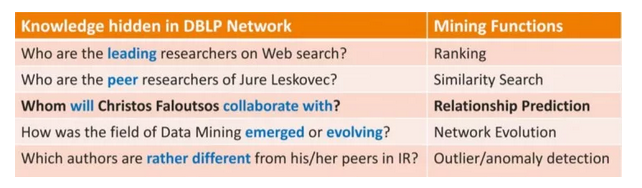
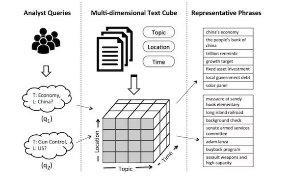

定义
包含不同类型节点和边的异质信息网络可
以更加完整自然地对现实世界的网络数据建模
元路径表示连接两个对象之间的关系
的组合，它刻画了网络中包含的丰富的语义信息
异质信息网络被定义为一个有向图，它包含多种类型的对象或者关系，每个对象属于一个特定的对象类型，每条关系属于一个特定的关系类型。网络模式（Network schema）是定义在对象类型和关系类型上的一个有向图，是信息网络的元描述。
- 元路径
定义在网络模式上的链接两类对象的一条路径，形式化定义为表示对象类型之间的一种复合关系 R=R1R2……Rl，其中 代表关系之间的复合算子，Ai 表示对象类型，Ri 表示关系类型。
链接两类对象的不同元路径表示了不同的语义关系和不同的链接网络，这也造成了不同的分析结果和不同的特征表示。


挑战
节点和边的异质性带来的挑战。不同类型的节点和边代表不同的对象，因此，在异质网络的表征学习中需要考虑将不同类型的对象映射到不同的空间中。另外，如何有效地保存每个节点的异质邻居以及有效地处理异质的节点序列也是值得考虑的问题。
异质网络中丰富的信息带来的表示融合挑战。异质网络中的各类信息蕴含着丰富的语义，它从多
个维度来刻画节点的意义，因此，如何有效地抽取和利用异质网络的多维度信息，并有效地融合这些
信息以便全面地学习节点的表示是一个巨大的挑战。根据不同的元路径可以从多个维度对节点的丰富信息建模。如何有效地自动筛选和融合不同元路径下的网
络节点表示是一个值得关注的研究方向。目前节点的表征学习研究比较多，关系和元路径的表征学习
还比较少。不同类型的节点有不同的特征表示空间，对这些表示空间之间的关系还缺乏深入探究异质网络天然包含丰富的多模信息，如属性、文本和图像等。
只有将更多模态的信息考虑进来，学习到的网络节
点表示才能更加准确地对节点进行描述。而现有的
主要工作都致力于对异质信息网络中的结构信息建
模，没有充分挖掘网络中的其他模态信息。如何更
好地融合这些多模态信息的表征学习将是一个研究
难点现实世界中的网络往往规模较大并
且动态变化。我们需要考虑节点和边的异质性，快
速高效地获取新增节点的表示，研究面向增量计算
和在线计算的表征学习方法。在社区发现、异常检测等特定任务上，通用表
征学习的效果往往不尽如人意。如何与具体应用结
合学习网络表示是重要发展方向
- 更加复杂的网络构建
当前研究大多假定异质信息网络是明确定义的，网络中的对象和关系是清晰的。然而，在实际应用中，从真实数据构造异质信息网络会遇到很多挑战。对于关系数据库之类的结构化数据，构造异质信息网络比较容易，然而即使是在这种网络中，对象和关系也可能具有噪声，比如会出现对象重名或关系不完整等问题；对于像文本、图像等非结构化数据，如何准确抽取出相应的对象和关系，进而建立更加完善和准确的异质信息网络也将面临更多挑战，在实践中会用到诸如信息抽取、自然语言处理、图像处理等各种技术。
在异质信息网络中，对象可通过不同的方式组织在一起。星型模式是广泛使用的异质信息网络类型，例如前面介绍的科技文献网络。之后，又出现了带环的星型模式和多中心网络等网络模式。
用户可能存在于多个异质网络，这时需要对齐不同网络中的用户，有效融合不同网络的信息。还有很多网络数据，例如知识图谱，包含有很多种类型的对象和关系，很难用简单的网络模式来描述。这种丰富模式（schema-rich）的异质网络中也出现了很多新的研究问题，例如多种类型对象关系的管理以及元路径的自动产生等。
异质信息网络中的对象和关系包含着丰富的语义信息，而元路径可以捕捉这种语义信息。异质信息网络上的很多数据挖掘任务是基于元路径进行研究的，但是元路径在某些应用场景中并不能捕捉到精细的语义信息。例如，“作者-论文-作者”路径表示了作者之间的合作关系，但却不能描述特定条件下（例如KDD领域）的合作关系。为了克服这个不足，很多研究者提出了受限元路径、带权元路径、元结构等概念扩展元路径的语义抽取能力。针对更加复杂的网络结构（如知识图谱），如何设计更加灵活精细的语义探索工具仍然需要进一步的研究。
表征学习方法
基于元路径的随机游走
- Metapath2vec： 做基于
元路径的随机游走来抽取节点结构信息，进一步深化节点类型带来的差异提
出了Metapath2Vec++
HIN2Vec： 考虑了不同类
型节点及节点间复杂多样的关系HINE ：元路径随机游走来计算
节点间的相似性
###基于分解
可以将异质网络分解为比较简单的网络，分别对这些网络进行表征学习，然后再将这些信息融合起来
HEREC ：利用元路
径抽取异质网络中的多个同质网络，并对这些同质
网络进行表征学习，然后通过融合函数对不同的表
示进行融合，并结合矩阵分解模型进行评分预PTE ：从文本中构建的异质网络分解成3 个子网：
word-word 网络、word-document 网络和word-label
网络。对上述网络进行表征学习可以得到不同类型
对象（如word、document 和label）的向量表示EOE 复杂的学术异质网分解为单词共现网络和
作者合作网络，对各个子网内节点对和子网间节点
对同时进行表征学习
深度学习
- BL-MNE 采用自动编码机分别对异质网络在
不同元路径下的信息进行编码，联合编码，不同网络之间通过转移矩阵进行融合 SHINE 利用自动编码机分别对社交网络、情感
网络和画像网络中的异质信息进行压缩编码得到特
征表示，然后通过聚合函数对这些表示进行融合得
到最终的节点表示。HNE 针对文本和图像并存的异质网
络，通过CNN 和MLP 分别对文本和图像数
据进行特征抽取，然后通过转移矩阵将不同类型的
数据投影到同一个空间。上述方法均采用深度模型
来学习节点的向量表示。
研究点
- 提取元路径，挖掘隐含的丰富语义关系
应用（网络结构，语义探索）
相似性度量
- PathSim 利用对称元路径抽取两个节点之间的连通路径来度量二者的相似性，这样不仅利用到了相关的异质信息，而且体现了节点和边的丰富语义
节点分类
链路预测
推荐系统
- JRL ：推荐模型设计了一个深度表征学习框架，利用异质
信息源（评分、评论和图片）学习用户和物品的特
征表示，然后通过一个额外层学习到用户和物品的
联合表示，最后通过Pair-wise 学习，来推荐top-N
的物品。
Ting Chen、Yizhou Sun 等人 提出一种
混合表征学习推荐框架，并对采样策略进行优化，
提出了三种可以大大提升训练效率的采样策略
异常检测
韩家炜 from Unstructured Text to TextCube: Automated Construction andMultidimensional Exploration
将数据结构化。
两种结构化数据的形式，一种是异质网络（Heterogeneous Network），另一种是多维文本立方体（Multi-dimensionalText Cube）。
- 无结构文本变成有结构文本
- 从结构文本中挖掘知识
Structuring：将无结构的文本转化成有结构的、有类型的、关联的实体或关系
Networking：利用大量有结构的关系构建网络
Mining：在关系和网络上进行挖掘
网络
如果有一个 Network 将 Big Data 结构化后，其预测能力（或者别的能力）将是非常强的。

text cube
通过 NY Times 在 2016 年的新闻很容易就挖掘出了当时美国两党辩论过程中的主要议程（例如

Phrase Mining
从 Text 中挖掘出词组（Phrase），那么对挖掘文本结构将有很重要的意义。韩家炜团队的人员先后提出了三种方法，分别为无监督的 TopMine、弱监督的 SegPhrase和远程监督的AutoPhrase
Philip S. Yu 广度学习
首先是在同一个实体上有不同类型信息的学习。这种类型的广度学习包括前面谈到的 Multi-view Learning、Multi-source Learning、Multi-model Learning 等。
其次是在不同的但类型相似的实体上信息的学习。这包括 Transfer Learning。
另外是在有复杂网络类型关系的不同类型实体信息的学习。这包括基于融合的异质信息网络（HIN）
要做好「广度学习」，需要以下三步：
首先，定义并获取相关的有用数据源，也即找到对你的问题有用的数据；
其次，设计一种模型来将异质数据源信息融合起来；
最后，基于模型整体的需求从各种数据源中深度地去挖掘信息。
参考
2018，异质网络表征学习的研究进展
异构信息网络挖掘： 原理和方法法》，作者( 美）孙艺洲（Yizhou Sun），（美）韩家炜（Jiawei Han）